Оглавление
Программирование модель/представление
Введение в программирование модель/представление
В Qt 4 введен новый набор классов для просмотра элементов использующих архитектуру модель/представление для управления взаимосвязью между данными и методом их представления пользователю. Разделение функциональности, введенное в этой архитектуре, дает разработчикам большую гибкость в настройке отображения элементов и предоставляет стандартный интерфейс модели, позволяющий широкому диапазону источников данных использовать существующие представления элементов. В этом документе мы дадим краткое описание парадигмы модель/представление, выделим концепции и опишем архитектуру системы представления элементов. Каждый компонент данной архитектуры будет описан и будут предоставлены примеры, показывающие как использовать предоставленные классы.
Архитектура модель/представление
Архитектура модель-представление-контроллер (Model-View-Controller, MVC) является шаблоном проектирования, берущим начало от Smalltalk, который часто используется для создания пользовательских интерфейсов. В книге "Design Patterns" Гаммы (Gamma) и других написано:
MVC состоит из трех типов объектов. Модель - объект приложения, представление - его экранное представление и контроллер - определяет реакцию пользовательского интерфейса на пользовательский ввод. До MVC при разработке пользовательского интерфейса эти объекты смешивались вместе. MVC разделяет их, для увеличения гибкости и возможности повторного использования.
Если объединить объекты представления и контроллера, то в результате получится архитектура модель/представление. Это все еще отделяет способ хранения данных от способа их представления пользователю, но обеспечивает простую структуру, основанную на тех же принципах. Данное разделение дает возможность показать пользователю одни и те же данных в различных представлениях и реализовать новые типы представлений без изменения базовой структуры данных. Чтобы обеспечить гибкость управления пользовательским вводом, мы представляем концепцию делегата (delegate). Преимущество наличия делегата в этой структуре состоит в том, что это дает возможность для настройки представления и редактирования элементов данных.
|
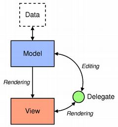 |
Архитектура модель/представление Модель осуществляет соединение с источником данных, предоставляя необходимый интерфейс другим компонентам архитектуры. Характер связи зависит от типа источника данных и способа реализации модели. Из модели представление получает модельные индексы, являющиеся ссылками на элементы данных. Передавая модельные индексы модели, представление может получить элементы данных из источника данных. В стандартных представлениях делегат отображает элементы данных. Если элемент редактируемый, делегат связывается с моделью непосредственно используя модельные индексы. |
Как правило, классы модель/представление могут быть разделены на три описанные выше группы: модели, представления и делегаты. Каждый из этих компонентов описывается абстрактным классом, предоставляющим общий интерфейс и, в некоторых случаях, особенности реализации по умолчанию. Абстрактные классы подразумевают наследование от них в порядке, предоставляющем полный набор функциональности, ожидаемой другими компонентами; это позволяет также писать специализированные компоненты.
Модели, представления и делегаты взаимодействуют друг с другом используя сигналы и слоты:
Модели
Все модели элементов основаны на классе QAbstractItemModel. Этот класс определяет интерфейс, используемый представлениями и делегатами для доступа к данным. Сами данные не должны храниться в модели; они могут храниться в структуре данных или хранилище, предоставляемом отдельным классом, файле, базе данных или каком-либо другом прикладном компоненте.
Базовые концепции моделей описаны в разделе "Классы моделей".
QAbstractItemModel обеспечивает достаточно гибкий интерфейс к данным для обработки представлений, которые представляют данные в виде таблиц, списков и деревьев. Однако, при реализации новых моделей в виде структур списков и таблиц, классы QAbstractListModel и QAbstractTableModel послужат лучшей отправной точкой, так как они предоставляют реализации соответствующих функций по умолчанию. На основе каждого из этих классов можно создать подклассы для предоставления моделей, поддерживающих специфичные виды списков и таблиц.
Процесс создания подклассов моделей обсуждается в разделе "Создание новых моделей".
Qt предоставляет несколько готовых моделей, которые могут использоваться для обработки элементов данных:
Если эти стандартные модели не отвечают вашим требованиям, то для создания своих собственных моделей вы можете создать подкласс QAbstractItemModel, QAbstractListModel или QAbstractTableModel.
Представления
Предоставляются полные реализации для различных видов представлений: QListView отображает список элементов, QTableView отображает данные модели в виде таблицы, а QTreeView отображает элементы модели в виде иерархического списка. Каждый из этих классов основан на базовом абстрактном классе QAbstractItemView. Хотя эти классы и готовы к использованию, они могут иметь подклассы, для более точной настройки представления.
Доступные представления описаны в разделе "Классы представлений".
Делегаты
QAbstractItemDelegate - это абстрактный базовый класс делегата в структуре модель/представление. Начиная с Qt 4.4, стандартная реализация делегата предоставляемая QStyledItemDelegate, и используется как делегат по умолчанию стандартных представлений Qt. Однако, QStyledItemDelegate и QItemDelegate являются независимыми альтернативами для рисования и предоставления редакторов элементов представлений. Разница между ними состоит в том, что QStyledItemDelegate использует текущий стиль для отрисовки своих элементов. По этой причине мы рекомендуем использовать QStyledItemDelegate в качестве базового при реализации пользовательских делегатов или когда работают с таблицами стилей Qt.
Делегаты описаны в разделе "Классы делегатов".
Сортировка
В архитектуре модель/представление имеется два подхода к сортировке; какой подход выбрать - зависит от вашей базовой модели.
Если ваша модель сортируемая, т.е. если она переопределит функцию QAbstractItemModel::sort(), то и QTableView и QTreeView предоставляют API, позволяющее программно сортировать данные вашей модели. Кроме того, вы можете разрешить интерактивную сортировку (interactive sorting) (т.е. позволить пользователям сортировать данные нажимая на заголовки представления), соединив сигнал QHeaderView::sortIndicatorChanged() со слотом QTableView::sortByColumn() или же со слотом QTreeView::sortByColumn(), соответственно.
Альтернативный подход, если ваша модель не имеет необходимого интерфейса или вы хотите использовать представление списка для отображения ваших данных, заключается в использовании модели-посредника для преобразования структуры вашей модели перед передачей данных в представление. Детально это рассматривается в разделе "Модели-посредники".
Вспомогательные классы
Множество вспомогательных классов унаследованы от классов стандартных представлений для удобства использования в приложениях, зависящих от основанных на элементах представлениях Qt и классах таблиц. Они не предназначены для создания на их основе подклассов, а существуют просто как эквивалент классов Qt3, работающих по старой схеме. Примерами таких классов служат QListWidget, QTreeWidget и QTableWidget, реализующие поведение, подобное поведению классов Qt 3 QListBox, QListView и QTable.
Эти классы менее гибки, чем классы представлений и не могут использоваться с произвольными моделями. Если вы не сильно нуждаетесь в наборе основанных на элементах классов, мы рекомендуем использовать при обработке данных в представлениях элементов подход на основе модель/представление.
Если же вы хотите воспользоваться достоинствами разделения данных и представления не отказываясь от схемы явного предварительного заполнения данных, как например QListView, QTableView и QTreeView с моделью QStandardItemModel.
Использование моделей и представлений
В следующих разделах объясняется, как использовать шаблон модель/представление в Qt. Каждый из разделов включает в себя пример и сопровождается разделом, в котором показывается как создавать новые компоненты.
Две модели, включённые в состав Qt
Qt предоставляет две стандартные модели: QStandardItemModel и QFileSystemModel. QStandardItemModel - это многоцелевая модель, которая может использоваться для представления различных структур данных в виде списка, таблицы или дерева. Данная модель также обрабатывает элементы данных. QFileSystemModel - это модель, которая обрабатывает информацию о содержимом директории. Как результат, она не содержит самих элементов данных, а просто представляет файлы и директории локальной файловой системы.
QFileSystemModel предоставляет готовую к использованию и подходящую для экспериментов модель, которая легко настраивается для работы с существующими данными. На примере этой модели, мы можем показать, как настраивать модель для использования с готовыми представлениями и как управлять данными с помощью модельных индексов.
Использование представлений с существующей моделью
Классы QListView и QTreeView являются наиболее подходящими для использования с QFileSystemModel. Нижеприведенный пример отображает содержимое директории в виде дерева и его же в виде списка. Представления разделяют пользовательский выбор элементов, так что они подсвечиваются в обоих представлениях.
Мы подготавливаем к использованию QFileSystemModel и создаем представления для отображения содержимого директории. Здесь показан самый простой способ использования модели. Создание и использование модели выполняются в единственной функции main():
int main(int argc, char *argv[])
{
QApplication app(argc, argv);
QSplitter *splitter = new QSplitter;
QFileSystemModel *model = new QFileSystemModel;
model->setRootPath(QDir::currentPath());
Модель настроена для использования данных из определенной файловой системы. Вызов setRootPath() сообщает модели какой диск в файловой системе делать видимым для представлений.
Мы создаем два представления для отображения двумя различными способами элементов, предоставляемых моделью:
QTreeView *tree = new QTreeView(splitter);
tree->setModel(model);
tree->setRootIndex(model->index(QDir::currentPath()));
QListView *list = new QListView(splitter);
list->setModel(model);
list->setRootIndex(model->index(QDir::currentPath()));
Представления создаются также, как и другие виджеты. Настройка представления для отображения элементов модели производится просто вызовом функции setModel() с моделью директории, переданной в качестве аргумента. Мы фильтруем предоставляемые моделью данные вызывая функцию setRootIndex() на каждом представлении, передавая соответствующий модельный индекс из файловой системы для текущего каталога.
Функция index(), используемая в этом случае, является уникальной для QFileSystemModel; мы передаем ей каталог и она возвращает модельный индекс. Модельные индексы обсуждаются в "Классы моделей".
Оставшаяся часть функции лишь отображает представления на виджете и запускает цикл обработки событий приложения:
splitter->setWindowTitle("Two views onto the same file system model");
splitter->show();
return app.exec();
}
В вышеприведенном примере мы не упомянули обработку выбора элементов пользователем. Эта тема более подробно раскрыта в разделе "Обработка выбора в представлении элементов".
Классы моделей
До ознакомления с обработкой выбора, вам будет полезно изучить концепции, используемые в структуре модель/представление.
Основные концепции
В архитектуре модель/представление, модель предоставляет стандартный интерфейс, используемый представлениями и делегатами для доступа к данным. В Qt, стандартный интерфейс определен с помощью класса QAbstractItemModel. Независимо от того, как элементы данных хранятся в структуре данных, все подклассы QAbstractItemModel представляют данные в виде иерархической структуры, содержащей таблицы элементов. Представления используют это соглашение для доступа к элементам данных модели, но они не ограничены в способах предоставления информации пользователю.
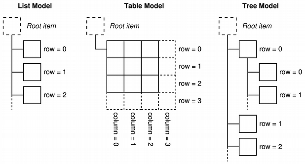
С помощью механизма сигналов и слотов, модели уведомляют связанные представления об изменениях в данных.
Данный раздел описывает некоторые концепции, являющиеся важнейшими для получения другими компонентами доступа к элементам данных через класс модели. Более продвинутые концепции обсуждаются в следующих разделах.
Модельные индексы
Для того, чтобы гарантировать, что представления данных отделены от способа доступа к ним, введено понятие модельного индекса. Каждая часть информации, которая может быть получена через модель, представлена модельным индексом. Представления и делегаты используют эти индексы для запроса отображаемых данных.
В результате, только модели требуется знать, как хранятся данные, а тип данных, управляемых моделью, может быть определен довольно приблизительно. Модельные индексы содержат указатель на модель, которая их создала, что предотвращает беспорядок при работе с более, чем одной моделью.
QAbstractItemModel *model = index.model();
Модельные индексы предоставляют временные ссылки на части информации и могут использоваться для получения или изменения данных посредством модели. В связи с тем, что модели могут время от времени реорганизовывать свою структуру, модельные индексы могут стать недействительными и не должны храниться. Если требуется долгоживущая ссылка на часть данных, должен быть создан постоянный модельный индекс. Он предоставляет ссылку на данные, которая поддерживается моделью актуальной. Временные модельные индексы предоставляются классом QModelIndex, а постоянные модельные индексы предоставляются классом QPersistentModelIndex.
Для получения модельного индекса, соответствующего элементу данных, у модели должны быть заданы три свойства: номер строки, номер столбца и модельный индекс родительского элемента. Следующий раздел детально описывает и поясняет эти свойства.
Строки и столбцы
Основной формой представления модели является таблица, в которой элемент задается номерами строки и столбца. Это не означает, что основные части информации хранятся в виде массива; использование номеров строк и столбцов является лишь соглашением, позволяющим элементам взаимодействовать друг с другом. Мы можем получить информацию о любом элементе, указав модели номер строки и столбца и получив индекс, представляющий элемент:
QModelIndex index = model->index(row, column, ...);
Модели, предоставляющие интерфейсы к простым одноуровневым структурам данных, таким как списки и таблицы, не нуждаются в другой информации помимо номеров строк и столбцов, но, поскольку вышеупомянутый код требует этого, мы должны сообщить несколько больше данных для получения модельного индекса.
|
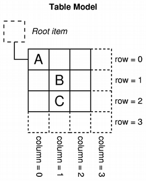 |
Строки и столбцы Диаграмма показывает представление основной табличной модели, в которой каждый элемент определяется парой номеров - строки и столбца. Мы получаем модельный индекс, который ссылается на элемент данных, передавая соответствующие номера строки и столбца в модель. QModelIndex indexA = model->index(0, 0, QModelIndex()); QModelIndex indexB = model->index(1, 1, QModelIndex()); QModelIndex indexC = model->index(2, 1, QModelIndex()); Элементы верхнего уровня модели всегда имеют в качестве родителя специфический QModelIndex(). Он будет описан в следующем разделе. |
Родители элементов
Таблицеподобный интерфейс к элементам данных, предоставляемый моделью, идеален при использовании данных в представлениях в виде таблицы или списка; система номеров строк и столбцов точно указывает способ отображения представлениями элементов. Однако, структуры, подобные представлению дерева, требуют более гибкого интерфейса к элементам. В результате, каждый элемент также может быть родителем другой таблицы элементов, почти также, как элемент верхнего уровня в представлении дерева может вмещать в себя список других элементов.
При запросе индекса элемента модели, мы должны предоставить некоторую информацию о родительском элементе. Единственным способом обращения к элементу вне модели является модельный индекс, так что модельный индекс родителя также должен быть известен:
QModelIndex index = model->index(row, column, parent);
|
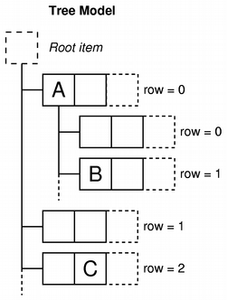 |
Родители, строки и столбцы Диаграмма показывает представление модели дерева, в которой каждый элемент определяется родителем, номером строки и номером столбца. Элементы "A" и "C" представлены как верхнеуровневые элементы модели: QModelIndex indexA = model->index(0, 0, QModelIndex()); QModelIndex indexC = model->index(2, 1, QModelIndex()); Элемент "A" имеет множество дочерних объектов. Модельный индекс элемента "B" может быть получен с помощью следующего кода: QModelIndex indexB = model->index(1, 0, indexA); |
Роли элемента
Элементы модели могут выполнять различные роли для других компонентов, позволяя в различных ситуациях получать различные виды данных. Например, Qt::DisplayRole используется для доступа к строке, которая может отображаться в представлении как текст. Как правило, элементы содержат информацию для нескольких различных ролей, а стандартные роли определяются с помощью Qt::ItemDataRole.
Мы можем запросить у модели информацию об элементе, передав ей модельный индекс, соответствующий элементу и задав роль для получения данных желаемого типа:
QVariant value = model->data(index, role);
|
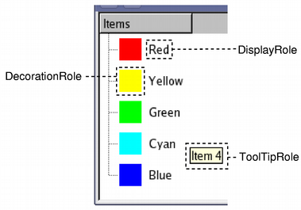 |
Роли элемента Роль указывает модели, данные какого типа будут переданы. Представления могут отображать роли различными способами, поэтому важно обеспечить информацию, соответствующую каждой роли. Раздел "Создание новых моделей" более подробно описывает несколько необычное использование ролей. |
Наиболее частые способы использования элементов данных описываются стандартными ролями, определенными в Qt::ItemDataRole. Снабжая элемент данных информацией для каждой роли, модель может предоставить предпочтения для отображения элемента пользователю представлениями и делегатами. Различные виды представлений имеют возможность интерпретировать эти данные или игнорировать эту информацию, если требуется. Также имеется возможность определять дополнительные, специфические для приложения, роли.
Резюме
Использование модельных индексов
Чтобы продемонстрировать, как данные могут быть получены из модели с помощью модельных индексов, мы создаем QFileSystemModel без представления и отображаем в виджете имена файлов и директорий. Хотя этот пример и не показывает нормального способа использования модели, он демонстрирует соглашения, используемые моделями при работе с модельными индексами.
Мы создаем модель файловой системы следующим способом:
QFileSystemModel *model = new QFileSystemModel;
QModelIndex parentIndex = model->index(QDir::currentPath());
int numRows = model->rowCount(parentIndex);
В этом случае, мы создаем QFileSystemModel по умолчанию, получив родительский индекс с помощью специфической реализации index(), предоставляемой этой моделью, а с помощью функции rowCount() мы получаем количество строк в модели.
Для простоты, мы интересовались лишь элементами первого столбца модели. Мы рассмотрим каждую строку по очереди, получая модельный индекс для первого элемента каждой строки, и читаем данные, хранящиеся в модели для этого элемента.
for (int row = 0; row < numRows; ++row) {
QModelIndex index = model->index(row, 0, parentIndex);
Для получения модельного индекса мы задаем номер строки, номер столбца (ноль для первого столбца) и модельный индекс, соответствующий родителю всех элементов, которые мы хотим получить. Текст, хранящийся в каждом элементе, может быть получен с помощью функции модели data(). Мы задаем модельный индекс и DisplayRole, чтобы получить информацию об элементе в виде строки.
QString text = model->data(index, Qt::DisplayRole).toString();
// Отображение текста в виджете.
}
Вышеприведенный пример демонстрирует основные принципы, используемые для восстановления данных из модели:
Дополнительные материалы
Новые модели могут быть созданы с помощью реализации стандартного интерфейса, предоставляемого QAbstractItemModel. Мы продемонстрируем это в разделе "Создание новых моделей", создав удобную готовую к использованию модель для хранения списка строк.
Классы представлений
Концепции
В архитектуре модель/представление, представление получает элементы данных от модели и предоставляет их пользователю. Способ, которым данные предоставляются пользователю, не обязан походить на структуру данных, предоставляемую моделью, и может быть полностью отличным от основной структуры данных, хранящей элементы данных.
Разделение содержимого и представления достигается с помощью использования стандартного модельного интерфейса, предоставляемого QAbstractItemModel, стандартного интерфейса представления, предоставляемого QAbstractItemView, и использования модельных индексов, единообразно представляющих элементы данных. Представления обычно управляют размещением данных, полученных от модели. Они могут отображать отдельные элементы непосредственно или использовать делегаты для реализации особенностей отображения и редактирования.
Наряду с отображением элементов, представления управляют навигацией между элементами и некоторыми аспектами выбора элемента. Представления также реализуют основные возможности пользовательского интерфейса, такие как контекстные меню и перетаскивание. Представление может предоставить средства обслуживания редактирования элементов или могут работать с делегатом, предоставляющим собственный редактор.
Представление может быть создано без модели, но модель должна быть предоставлена прежде, чем оно сможет отобразить полезную информацию. Представления отслеживают выбор элементов пользователем с помощью выбора, который может быть реализован отдельно для различных представлений или быть общим для различных представлений.
Некоторые представления, такие как QTableView и QTreeView, отображают заголовки также как элементы. Заголовки также реализованы с помощью класса представления QHeaderView. Заголовки обычно обращаются к той же модели, что и содержащее их представление. Они получают данные от модели с помощью функции QAbstractItemModel::headerData() и обычно отображают информацию заголовков в виде надписей. Для получения экзотических заголовков, можно создать подклассы QHeaderView.
Использование существующего представления
Qt предоставляет три готовых к использованию класса представлений, которые отображают информацию в виде, привычном большинству пользователей. QListView может отображать элементы модели в виде простого списка или в виде классического представления пиктограмм. QTreeView отображает элементы данных модели в виде иерархии списков, позволяющей компактно представить глубоко вложенные структуры. QTableView представляет элементы модели в виде таблицы, очень сильно похожей на приложение электронной таблицы.
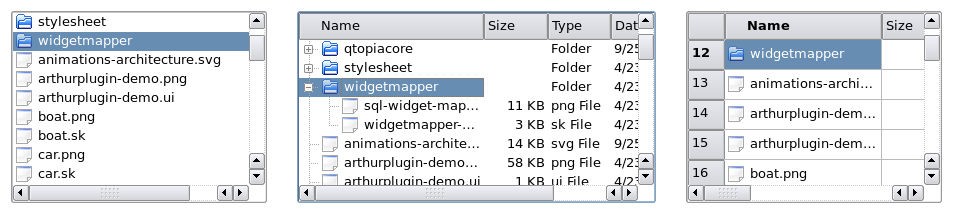
Реализация поведения по умолчанию для вышеприведенных представлений, достаточна для большинства приложений. Они предоставляют основные средства редактирования и могут быть настроены для более специфических пользовательских интерфейсов.
Использование модели
Возьмем модель списка строк, которую мы создали в качестве примера, настроим ее на некоторые данные и создадим представление для отображения содержимого модели. Все это может быть сделано в рамках одной функции:
int main(int argc, char *argv[])
{
QApplication app(argc, argv);
// Убраны отступы для облегчения цитирования:
QStringList numbers;
numbers << "One" << "Two" << "Three" << "Four" << "Five";
QAbstractItemModel *model = new StringListModel(numbers);
Обратите внимание на то, что мы объявили StringListModel как QAbstractItemModel. Это позволяет нам использовать абстрактный интерфейс модели и гарантирует, что этот код будет работать даже в том случае, если мы заменим модель списка на другую модель.
Представление списка, предоставляемое QListView, вполне достаточно для отображения элементов модели списка строк. Мы создаем представление и устанавливаем его на модель с помощью следующих строк кода:
QListView *view = new QListView;
view->setModel(model);
Представление отображается обычным способом:
view->show();
return app.exec();
}
Представление отображает содержимое модели, получая данные через интерфейс модели. При попытке пользователя редактировать элемент, представление использует делегата по умолчанию для предоставления виджета редактора.
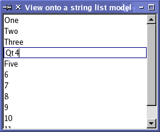
Рисунок выше демонстрирует, как QListView представляет данные модели списка строк. Так как модель редактируемая, представление автоматически, используя делегата по умолчанию, позволяет быть отредактированным каждому элементу.
Использование множества представлений с одной моделью
Отображение одной модели во множестве представлений - просто вопрос установки одной и той же модели для каждого представления. В следующем коде мы создаем два представления-таблицы, каждое из которых использует простую модель, которую мы создали в этом примере:
QTableView *firstTableView = new QTableView;
QTableView *secondTableView = new QTableView;
firstTableView->setModel(model);
secondTableView->setModel(model);
Использование сигналов и слотов в архитектуре модель/представление означает, что об изменении данных в модели может быть сообщено всем связанным с ней представлениям, гарантируя при этом доступ к одним и тем же данным независимо от используемого представления.
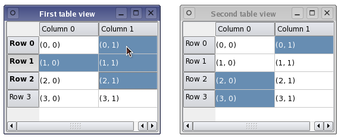
На рисунке выше показаны два различных представления одной модели, каждое из которых содержит множество выделенных элементов. Несмотря на то, что данные в представлениях синхронизированы, каждое представление содержит свою внутреннюю модель выбора. В некоторых ситуациях это может быть полезно, но для большинства приложений желательна общая модель выбора.
Обработка выбора элементов
Механизм обработки выбора элементов в представлении предоставляется классом QItemSelectionModel. Все стандартные представления создают свои собственные модели выбора по умолчанию и взаимодействуют с ними стандартным образом. Модель выбора, используемая представлением, может быть получена с помощью функции selectionModel(), а заменить модель выбора можно с помощью функции setSelectionModel(). Возможность управлять моделью выбора, используемой представлением, полезна, если вы хотите предоставить множество представлений для одних и тех же данных модели.
Вообще, если вы создаете подкласс модели или представления, вам не требуется управлять содержимым модели выбора напрямую. Однако если требуется, можно получить доступ к интерфейсу модели выбора, что обсуждается в "Обработке выбора в представлениях элементов".
Разделение выбора между представлениями
Хотя предоставление представлением своей собственной модели выбора по умолчанию и удобно, но при использовании нескольких представлений с одной моделью часто желательно, чтобы и данные модели и выбор пользователя были показаны одинаково во всех представлениях. Так как классы представлений позволяют заменять свои внутренние модели выбора, мы можем добиться единообразного отображения выбора в разных представлениях с помощью следующего кода:
secondTableView->setSelectionModel(firstTableView->selectionModel());
Второму представлению устанавливают модель выбора первого представления. Теперь оба представления работают с одной моделью выбора, синхронно показывая и данные, и выбранные элементы.
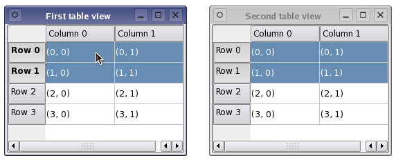
В вышеприведенном примере для отображения данных одной модели использовались два представления одинакового типа. Однако, если используются два различных представления, то выбранные элементы могут быть представлены в каждом представлении по-разному; например, выбор смежных элементов в представлении таблицы, в представлении дерева может быть отображен как фрагментированный набор выделенных элементов.
Классы делегатов
Концепции
В отличие от шаблона модель-представление-контроллер (MVC), архитектура модель/представление не включает в себя полностью независимые компоненты для управления взаимодействием с пользователем. Как правило, представление отвечает за представление пользователю данных модели и за обработку пользовательского ввода. Чтобы придать немного гибкости способу, которым этот ввод получается, взаимодействие осуществляется с помощью делегатов (delegates). Эти компоненты предоставляют возможности ввода, а также отвечают за отрисовку индивидуальных элементов в некоторых представлениях. Стандартный интерфейс управления делегатами определен в классе QAbstractItemDelegate.
Ожидается, что делегаты способны самостоятельно отрисовывать свое содержимое, реализовав функции paint() и sizeHint(). Однако, простые, основанные на виджетах, делегаты могут быть созданы как подкласс QItemDelegate вместо QAbstractItemDelegate, и получить преимущества реализации этих функций по умолчанию.
Редакторы для делегатов могут быть реализованы либо с использованием виджетов для управления процессом редактирования либо непосредственной обработкой событий. Первый подход раскрывается в этом разделе, а также показан в примере "Spin Box Delegate".
Пример Pixelator показывает как создавать пользовательский делегат, выполняющий специализированный рендеринг для представления таблицы.
Использование существующих делегатов
Стандартные представления, поставляемые вместе с Qt, используют экземпляры класса QItemDelegate для предоставления средств редактирования. Эта реализация по умолчанию интерфейса делегата отображает элементы в обычном стиле для каждого из стандартных представлений: QListView, QTableView и QTreeView.
Стандартные представления используют делегат по умолчанию, обрабатывающий все стандартные роли. Способ их интерпретации описывается в документации к QItemDelegate.
Функция itemDelegate() возвращает делегат, используемый представлением. Функция setItemDelegate() позволяет вам установить пользовательский делегат для стандартного представления и важно использовать эту функцию когда устанавливается делегат для пользовательского представления.
Простой делегат
Реализованный здесь делегат использует QSpinBox для предоставления средств редактирования и предназначен в основном для использования с моделями, которые отображают целые числа. Хотя для этой цели мы установили пользовательскую модель таблицы, основанную на целых числах, мы легко можем использовать вместо нее QStandardItemModel, так как вводом данных управляет пользовательский делегат. Мы создадим представление таблицы для отображения содержимого модели и оно будет использовать пользовательский делегат для редактирования.

Мы создаем подкласс делегата от QItemDelegate поскольку мы не хотим писать функции пользовательского вывода на экран. Однако, мы все же должны предоставить функции для управления виджетом-редактором:
class SpinBoxDelegate : public QItemDelegate
{
Q_OBJECT
public:
SpinBoxDelegate(QObject *parent = 0);
QWidget *createEditor(QWidget *parent, const QStyleOptionViewItem &option,
const QModelIndex &index) const;
void setEditorData(QWidget *editor, const QModelIndex &index) const;
void setModelData(QWidget *editor, QAbstractItemModel *model,
const QModelIndex &index) const;
void updateEditorGeometry(QWidget *editor,
const QStyleOptionViewItem &option, const QModelIndex &index) const;
};
Обратите внимание, что при создании делегата виджеты-редакторы не создаются. Мы создаем виджет-редактор только когда это необходимо.
Предоставление редактора
В этом примере, когда представление таблицы нуждается в редакторе, оно просит делегат предоставить виджет-редактор, соответствующий модифицируемому элементу. Функцию createEditor() снабжаем всем, что необходимо делегату для установки соответствующего виджета:
QWidget *SpinBoxDelegate::createEditor(QWidget *parent,
const QStyleOptionViewItem &/* option */,
const QModelIndex &/* index */) const
{
QSpinBox *editor = new QSpinBox(parent);
editor->setMinimum(0);
editor->setMaximum(100);
return editor;
}
Обратите внимание, что мы не нуждаемся в хранении указателя на виджет-редактор, так как представление берет на себя ответственность за его уничтожение когда он станет не нужен.
Мы установили стандартный фильтр событий делегата на редактор для гарантирования того, что он предоставит ожидаемые пользователями стандартные "горячие" клавиши редактирования. Чтобы сделать возможным более сложное поведение в редактор могут быть добавлены дополнительные "горячие" клавиши; это обсуждается в разделе "Редактирование подсказок".
Представление убеждается в правильности установки данных редактора и геометрии с помощью вызова функций, которые для этих целей мы определим позднее. Мы можем создать различные редакторы, зависящие от предоставляемого представлением модельного индекса. Например, если у нас есть столбец целых чисел и столбец строк мы можем вернуть либо QSpinBox либо QLineEdit, в зависимости от того, какой столбец редактируется.
Делегат должен предоставить функцию копирования данных модели в редактор. В этом примере мы читаем данные, хранящиеся в роли отображения (display role), и соответственно устанавливаем значение в окошке счетчика.
void SpinBoxDelegate::setEditorData(QWidget *editor,
const QModelIndex &index) const
{
int value = index.model()->data(index, Qt::EditRole).toInt();
QSpinBox *spinBox = static_cast<QSpinBox*>(editor);
spinBox->setValue(value);
}
В этом примере мы знаем, что виджет-редактор это окошко счетчика, но мы можем предоставлять различные редакторы для разных типов данных в модели, в этом случае мы должны привести виджет к соответствующему типу до обращения к его функциям-членам.
Запись данных в модель
Когда пользователь завершает редактирования значения в окошке счетчика, представление просит делегата сохранить отредактированное значение в модели, вызвав функцию setModelData().
void SpinBoxDelegate::setModelData(QWidget *editor, QAbstractItemModel *model,
const QModelIndex &index) const
{
QSpinBox *spinBox = static_cast<QSpinBox*>(editor);
spinBox->interpretText();
int value = spinBox->value();
model->setData(index, value, Qt::EditRole);
}
Так как представление управляет виджетами-редакторами делегата, мы должны только обновить модель с предоставленным редактором содержимым. В данном случае мы удостоверяемся в том, что окошко счетчика обновилось и обновляем содержащую значение модель, используя заданный индекс.
Стандартный класс QItemDelegate сообщает представлению когда он завершил редактирование испуская сигнал closeEditor(). Представление проверяет, что виджет-редактор закрыт и уничтожен. В этом примере мы предоставили только простые средства редактирования, поэтому нам никогда не понадобится испускать этот сигнал.
Все операции над данными выполняются через интерфейс, предоставляемый QAbstractItemModel. Это делает делегата в значительной степени независимым от типа данных, с которыми он манипулирует, но должны быть сделаны некоторые допущения в порядке использования определенных типов виджетов-редакторов. В этом примере мы предполагали, что модель всегда содержит целые числа, но мы можем использовать этот делегат с другими видами моделей, поскольку QVariant предоставляет удобные значения по умолчанию для непредвиденных данных.
Обновление геометрии редактора
За управление геометрией редактора отвечает делегат. Геометрия должна быть установлена при создании редактора, при изменении размеров или положения элемента в представлении. К счастью, представление предоставляет всю необходимую информацию о геометрии внутри объекта опция представления (view option).
void SpinBoxDelegate::updateEditorGeometry(QWidget *editor,
const QStyleOptionViewItem &option, const QModelIndex &/* index */) const
{
editor->setGeometry(option.rect);
}
В данном случае мы используем только информацию, предоставляемую опцией представления в прямоугольнике элемента. Делегат, который отображает элементы с несколькими примитивами, не использует прямоугольник элемента непосредственно. Он поместит редактор в зависимости от других примитивов в элементе.
Редактирование подсказок
После редактирования делегаты должны предоставить другим компонентам подсказки о результате процесса редактирования и предоставить подсказки, которые будут помогать любым последующим операциям редактирования. Достигается это испусканием сигнала QItemDelegate, который мы установили на окошко счетчика при его создании.
Поведение окошка счетчика можно настраивать, чтобы сделать его более дружественным. В фильтре событий по умолчанию, предоставляемом QItemDelegate, если пользователь нажмет Return для подтверждения своего выбора в окошке счетчика, делегат фиксирует значение в модели и закрывает окошко счетчика. Мы можем изменить это поведение, установив на окошко счетчика свой собственный фильтр событий и предоставив подсказки редактирования, соответствующие нашим нуждам; например, мы можем испустить closeEditor() с подсказкой EditNextItem для автоматического начала редактирования следующего элемента в представлении.
Другим подходом, не требующим использования фильтра событий, является предоставление нашего собственного виджета-редактора, возможно унаследованный для удобства от QSpinBox. Альтернативным подходом будет передать нам больше контроля над поведением виджета-редактора за счет написания дополнительного кода. В большинстве случаев более удобно установить фильтр событий в делегате, если вам необходимо настраивать поведение стандартного виджета-редактора Qt.
Делегаты не испускают эти подсказки, но тогда они будут слабее интегрированы в приложения и будут менее удобны, чем те, что испускают подсказки для поддержки общепринятых действий редактирования.
Обработка выбора элементов в представлениях
Концепции
В модели выбора, предлагаемой в классах представления элементов, предоставляется множество усовершенствований по сравнению с моделью выбора Qt 3. Она предоставляет более качественное описание выбора, основанное на возможностях архитектуры модель/представление. Несмотря на то, что стандартные классы для управления выбором в представлениях элементов вполне функциональны, для удовлетворения требований ваших моделей и представлений вы можете создавать свои собственные модели выбора.
Информация о выбранных элементах представления хранится в экземпляре класса QItemSelectionModel. Этот класс содержит свои собственные модельные индексы элементов независимо от представления. В связи с тем, что возможно использование нескольких представлений с одной моделью, можно разделить одну модель выбора между несколькими представлениями, позволив тем самым приложению отобразить одни и те же данные различными способами.
Выбор состоит из выбранных диапазонов. Эти диапазоны компактно хранят информацию о множестве выбранных элементов, запоминая только начальный и конечный модельные индексы для каждого диапазона выбранных элементов. Для описания выбора несмежных элементов используется более одного диапазона выделения.
Выбор применяется к набору модельных индексов, хранящихся в модели выбора. Последний выбор элементов известен как текущее выделение. Свойства этого набора могут быть изменены с помощью некоторых команд управления выбора. Они обсуждаются позже в этом разделе.
Текущий элемент и выделенные элементы
В представлении всегда имеется текущий элемент и выделенный элемент - два независимых состояния. Элемент может быть текущим элементом и выделенным элементом одновременно. Представление отвечает за обеспечение того, чтобы всегда имелся текущий элемент поскольку для перемещения с помощью клавиатуры, например, требуется текущий элемент.
Таблица ниже подчеркивает разницу между текущим элементом и выделенными элементами.
|
Текущий элемент |
Выбранные элементы |
|
Может быть только один текущий элемент. |
Может быть много выбранных элементов. |
|
Текущий элемент изменяется при перемещении с помощью клавиатуры или щелчков кнопок мыши. |
Состояние выделения элементов устанавливается или снимается, зависящий от нескольких предопределенных режимов - например, выделения единственного элемента, множественного выделения, и т.д. - когда пользователь взаимодействует с элементами. |
|
Текущий элемент будет редактироваться, если нажата клавиша редактирования, F2, или по элементу дважды щелкнули мышью (в том случае, если редактирование разрешено). |
Текущий элемент может быть использован вместе с указателем определяющим диапазон, который будет выбранным или невыбранным (или сочетанием этих двух). |
|
Текущий элемент обозначается прямоугольником фокуса ввода. |
Выбранные элементы обозначаются с помощью прямоугольника выделения. |
При манипулировании выбором, часто полезно думать о QItemSelectionModel как о наборе состояний выбора всех элементов в модели. Как только модель выбора установлена, наборы элементов могут быть выбраны, их выбор может быть отменен или изменен без необходимости знать, какие конкретно элементы выбраны. Индексы всех выбранных элементов могут быть получены в любое время, а с помощью механизма сигналов и слотов другие компоненты могут быть оповещены об изменениях в модели выбора.
Использование модели выбора
Стандартные классы представлений по умолчанию предоставляют модели выбора, которые могут использоваться в большинстве приложений. Модель выбора, принадлежащая одному представлению, может быть получена с помощью функции представления selectionModel() и разделена между несколькими представлениями с помощью функции setSelectionModel(), так что создание новых моделей выбора вообще не требуется.
Выбор создают задавая модель и пару модельных индексов в QItemSelection. Он использует индексы для ссылки на элементы данной модели и интерпретируются как левый верхний и правый нижний элементы в блоке выбранных элементов. Для того, чтобы выбор повлиял на модель выбора, его следует применить к ней; это может быть сделано различными способами, и каждый из них будет иметь различное влияние на уже выбранные элементы модели.
Выбор элементов
Для демонстрации некоторых основных возможностей выбора, мы создаем экземпляр пользовательской модели таблицы, содержащей всего 32 элемента, и для его данных устанавливаем табличное представление:
TableModel *model = new TableModel(8, 4, &app);
QTableView *table = new QTableView(0);
table->setModel(model);
QItemSelectionModel *selectionModel = table->selectionModel();
Для дальнейшего использования получаем модель выбора табличного представления по умолчанию. Мы не изменяем в модели никаких элементов, но вместо этого выбираем несколько элементов, которые представление покажет в левом верхнем углу таблицы. Чтобы сделать это, мы должны получить модельные индексы левого верхнего и правого нижнего элементов блока, который должен быть выбран:
QModelIndex topLeft;
QModelIndex bottomRight;
topLeft = model->index(0, 0, QModelIndex());
bottomRight = model->index(5, 2, QModelIndex());
Чтобы сделать эти элементы в модели выбранными и увидеть соответствующие изменения в табличном представлении, мы должны создать объект выбора и применить его к модели выбора:
QItemSelection selection(topLeft, bottomRight);
selectionModel->select(selection, QItemSelectionModel::Select);
Выбор применяется к модели выбора с помощью команды, заданной комбинацией флагов выбора. В данном случае, используемые флаги указывают, что объект выбора должен быть представлен в модели независимо от предыдущего состояния выбора. Результирующий выбор отображается представлением.
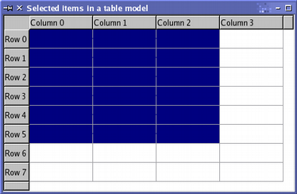
Выбор элементов может быть изменен с помощью различных операций, определяемых флагами выбора. Выбор, образующийся в результате этих действий, может иметь сложную структуру, но будет эффективно представлен моделью выбора. Использование различных флагов для изменения выбора элементов будет показано при описании обновления выбора.
Чтение состояния выбора
Модельные индексы, хранящиеся в модели выбора, могут быть прочитаны с помощью функции selectedIndexes(). Она возвращает несортированный список модельных индексов, который мы можем перебирать не задумываясь о том, к какой модели они относятся:
QModelIndexList indexes = selectionModel->selectedIndexes();
QModelIndex index;
foreach(index, indexes) {
QString text = QString("(%1,%2)").arg(index.row()).arg(index.column());
model->setData(index, text);
}
В вышеприведенном коде Qt для перебора индексов, возвращаемых моделью выбора, и изменения соответствующих им элементов используется удобная конструкция foreach.
Модель выбора испускает сигналы, сообщающие об изменениях в выборе. Они уведомляют другие компоненты как об изменениях модели выбора в целом, так и об изменениях элемента модели, имеющего в данным момент фокус. Мы можем соединить сигнал QItemSelection: один содержит список индексов, соответствующих выбранным элементам; другой содержит список индексов, соответствующих элементам, выбор которых был отменен.
В следующем коде мы предоставим слот, который получает сигнал selectionChanged(), заполняет строку выделенными элементами и очищает содержимое элементов, выбор которых отменен.
void MainWindow::updateSelection(const QItemSelection &selected,
const QItemSelection &deselected)
{
QModelIndex index;
QModelIndexList items = selected.indexes();
foreach (index, items) {
QString text = QString("(%1,%2)").arg(index.row()).arg(index.column());
model->setData(index, text);
}
items = deselected.indexes();
foreach (index, items)
model->setData(index, "");
}
Мы можем отследить изменение фокуса элементов внутри модели, соединив сигнал currentChanged() со слотом, вызываемым с двумя модельными индексами. Эти индексы соответствуют элементу, имевшему фокус раньше, и элементу, имеющему фокус в данный момент.
В следующем коде мы предоставляем слот, получающий сигнал QMainWindow:
void MainWindow::changeCurrent(const QModelIndex ¤t,
const QModelIndex &previous)
{
statusBar()->showMessage(
tr("Moved from (%1,%2) to (%3,%4)")
.arg(previous.row()).arg(previous.column())
.arg(current.row()).arg(current.column()));
}
С помощью этих сигналов контролируется выбор, сделанный пользователем, но мы можем изменять модель выбора непосредственно.
Обновление выбора
Команды выбора специфицируются комбинацией флагов выбора, определенной как QItemSelectionModel::SelectionFlag. Каждый из флагов выбора указывает модели выбора, как изменять внутренний набор уже выбранных элементов при каждом вызове функции select(). Наиболее часто используется флаг Select, который указывает модели выбора запомнить выбранные элементы именно так, как они были выбраны. Флаг Toggle указывает модели выбора инвертировать состояние выбора всех указанных элементов, т.е. невыбранные элементы сделать выбранными, а выбранные сделать невыбранными. Флаг Deselect делает все указанные элементы невыбранными.
Отдельные элементы модели выбора обновляются с помощью создания выбора элементов и применения его к модели выбора. В следующем коде мы применяем второй выбор элементов к показанной выше табличной модели, используя команду Toggle для инвертирования состояния выбора указанных элементов.
QItemSelection toggleSelection;
topLeft = model->index(2, 1, QModelIndex());
bottomRight = model->index(7, 3, QModelIndex());
toggleSelection.select(topLeft, bottomRight);
selectionModel->select(toggleSelection, QItemSelectionModel::Toggle);
Результат этого действия показан в табличном представлении, обеспечивающем хорошую визуализацию наших достижений:
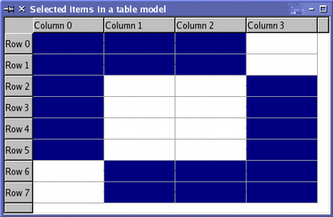
По умолчанию команды выбора работают только с элементами заданными модельными индексами. Однако флаг, используемый для описания команды выбора, может использоваться совместно с дополнительными флагами для изменения строк и столбцов. Например, если вы вызываете select() только с одним индексом, но с командой, которая является комбинацией флагов Select и Rows, то будет выбрана строка, содержащая элемент, на который ссылается модельный индекс. Следующий код показывает использование флагов Rows и Columns:
QItemSelection columnSelection;
topLeft = model->index(0, 1, QModelIndex());
bottomRight = model->index(0, 2, QModelIndex());
columnSelection.select(topLeft, bottomRight);
selectionModel->select(columnSelection,
QItemSelectionModel::Select | QItemSelectionModel::Columns);
QItemSelection rowSelection;
topLeft = model->index(0, 0, QModelIndex());
bottomRight = model->index(1, 0, QModelIndex());
rowSelection.select(topLeft, bottomRight);
selectionModel->select(rowSelection,
QItemSelectionModel::Select | QItemSelectionModel::Rows);
Несмотря на то, что модели выбора передано только четыре индекса, использование флагов выбора Columns и Rows приводит к тому, что выбираются два столбца и две строки. На следующем рисунке показан результат этого действия:

Команды, выполнявшиеся на нашей демонстрационной модели, привели к большому количеству выбранных элементов в ней. Возможно отменить выбор всех элементов, или полностью заменить текущий выбор элементов на новый.
Для замены текущего выбора новым, комбинируйте флаги выбора с флагом Current. Команда, использующая этот флаг, указывает, что модель выбора должна заменить свой текущий набор модельных индексов на тот, что указан при вызове select(). Для удаления прежнего выбора прежде, чем вы сделаете новый, используйте другие флаги выбора совместно с флагом Clear. Это приведет к переустановке набора модельных индексов модели выбора.
Выбор всех элементов в модели
Для выбора всех элементов модели, необходимо создать выбор для каждого из уровней модели, охватывающий все элементы этого уровня. Мы делаем это, восстанавливая индексы соответствующие левому верхнему и правому нижнему элементам заданного родительского индекса:
QModelIndex topLeft = model->index(0, 0, parent);
QModelIndex bottomRight = model->index(model->rowCount(parent)-1,
model->columnCount(parent)-1, parent);
Выбор создается с этими индексами и моделью. При этом будут выбраны соответствующие элементы модели выбора:
QItemSelection selection(topLeft, bottomRight);
selectionModel->select(selection, QItemSelectionModel::Select);
Это должно быть сделано для всех уровней модели. Родительский индекс для элементов верхнего уровня мы определяем обычным образом:
QModelIndex parent = QModelIndex();
В иерархических моделях для определения, является ли заданный элемент родительским для элементов более низкого уровня используется функция hasChildren().
Создание новых моделей
Разделение функциональных возможностей между компонентами архитектуры модель/представление позволяет создавать новые модели, способные использовать преимущества существующих представлений. Такой подход позволяет представлять данные из разнообразных источников, используя стандартные графические компоненты пользовательского интерфейса, такие как QListView, QTableView и QTreeView.
Класс QAbstractItemModel предоставляет интерфейс, который достаточно гибок для поддержки источников данных, хранящих информацию в иерархических структурах, позволяющих вставлять, удалять и изменять данные, или сортировать их различными способами. А также предоставляет поддержку операций перетаскивания (drag and drop).
Классы QAbstractListModel и QAbstractTableModel предоставляют поддержку интерфейсов для более простых неиерархических структур данных, и более легки для использования в качестве отправной точки для простых моделей списков и таблиц.
В этом разделе мы создадим простую модель только-для-чтения для исследования основных принципов архитектуры модель/представление. Позже в этом разделе, мы приспособим эту модель для того, чтобы данные могли быть изменены пользователем.
Для получения примера более сложной модели, смотрите пример Простая модель дерева.
Минимальные требования, которым должны удовлетворять подклассы QAbstractItemModel, описаны в документе Создание собственных моделей.
Разработка модели
При создании новой модели для существующей структуры данных очень важно решить, какой тип модели лучше всего подходит для обеспечения интерфейса к данным. Если структура данных может быть определена как список или таблица элементов, вы можете создать подкласс QAbstractListModel или QAbstractTableModel, так как эти классы предоставляют подходящие реализации функций по умолчанию.
Однако, если базовая структура данных может быть представлена только в виде иерархической древовидной структуры, возникает необходимость в создании подкласса QAbstractItemModel. Такой подход показан в примере Простая модель дерева.
В этом разделе мы реализуем простую модель, основанную на списке строк, для создания которой идеальной основой является класс QAbstractListModel.
Безотносительно формы, которую принимает основная структура данных, хорошим тоном в специализированных моделях является добавление стандартного API QAbstractItemModel к тому, который предоставляет более естественный доступ к структуре данных. Это облегчает заполнение модели данными, но кроме того позволяет другим компонентам архитектуры модель/представление взаимодействовать с моделью, используя стандартный API. Нижеприведенная модель предоставляет пользовательский конструктор исключительно с этой целью.
Пример модели только-для-чтения
Реализованная здесь модель - это простая неиерархическая модель только-для-чтения, основанная на стандартном классе QStringListModel. Она имеет QStringList в качестве внутреннего хранилища данных и реализует лишь самое необходимое для функционирования модели. Для облегчения реализации, мы создаем подкласс QAbstractListModel так как он определяет удобное поведение по умолчанию для моделей списков и предоставляет более простой интерфейс, чем класс QAbstractItemModel.
При реализации модели следует помнить, что QAbstractItemModel не хранит данных, он лишь предоставляет интерфейс, используемый представлениями для доступа к данным. Для минимальной модели только-для-чтения, необходимы реализации лишь нескольких функций, которые предоставлены по умолчанию для большинства интерфейсов. Декларация класса следующая:
class StringListModel : public QAbstractListModel
{
Q_OBJECT
public:
StringListModel(const QStringList &strings, QObject *parent = 0)
: QAbstractListModel(parent), stringList(strings) {}
int rowCount(const QModelIndex &parent = QModelIndex()) const;
QVariant data(const QModelIndex &index, int role) const;
QVariant headerData(int section, Qt::Orientation orientation,
int role = Qt::DisplayRole) const;
private:
QStringList stringList;
};
Кроме конструктора модели, мы должны реализовать только две функции: rowCount(), возвращающую количество строк в модели, и data(), возвращающую элемент данных, соответствующий определенному модельному индексу.
Хорошо работающие модели также реализуют headerData() для получения представлениями деревьев и таблиц чего-либо для отображения в их заголовках.
Обратите внимание на то, что это неиерархическая модель, поэтому мы не должны беспокоиться о родительско-дочерних отношениях. Если наша модель иерархическая, мы также должны реализовать функции index() и parent().
Список строк хранится в закрытой переменной-члене stringList.
Измерения модели
Мы хотим, чтобы количество строк в модели было таким же, что и количество элементов в списке строк. Помня об этом, мы реализуем функцию rowCount():
int StringListModel::rowCount(const QModelIndex &parent) const
{
return stringList.count();
}
Так как модель неиерархическая, мы можем спокойно игнорировать модельный индекс, соответствующий родительскому элементу. По умолчанию, модели, производные от QAbstractListModel, содержат только один столбец, поэтому нам не нужно переопределять функцию columnCount().
Заголовки и данные модели
В качестве элементов в представлении мы хотим возвратить строки из списка строк. Функция data() ответственна за возвращение элемента данных, соответствующего аргументу-индексу:
QVariant StringListModel::data(const QModelIndex &index, int role) const
{
if (!index.isValid())
return QVariant();
if (index.row() >= stringList.size())
return QVariant();
if (role == Qt::DisplayRole)
return stringList.at(index.row());
else
return QVariant();
}
Если переданный модельный индекс валиден, номер строки находится в пределах диапазона значений списка строк и требуемая роль нами поддерживается, мы возвращаем валидный QVariant.
Некоторые представления, такие как QTreeView и QTableView, могут отображать заголовки наряду с элементами данных. Если наша модель отображается в представлении с заголовками, мы хотим, чтобы заголовки содержали номера строк и столбцов. Мы можем предоставить информацию о заголовках реализовав функцию headerData():
QVariant StringListModel::headerData(int section, Qt::Orientation orientation,
int role) const
{
if (role != Qt::DisplayRole)
return QVariant();
if (orientation == Qt::Horizontal)
return QString("Column %1").arg(section);
else
return QString("Row %1").arg(section);
}
И снова мы возвращаем валидный QVariant только в том случае, если роль поддерживается. При решении, что должно быть возвращено, также принимается во внимание ориентация заголовка.
Не все представления отображают заголовки с элементами данных, и они могут быть настроены для сокрытия заголовков. Тем не менее, рекомендуется реализовывать функцию headerData() для предоставления важной информации о данных, предоставляемых моделью.
Элемент может иметь несколько ролей, предоставляя различные данные в зависимости от указанной роли. Элементы нашей модели имеют только одну роль, DisplayRole, так что мы возвращаем данные элемента независимо от указанной роли. Однако, данные, предоставляемые для роли DisplayRole, мы может повторно использовать в других ролях, таких как ToolTipRole, которую представления могут использовать для отображения информации об элементе во всплывающей подсказке.
Редактируемая модель
Модель только-для-чтения показывает, насколько просто данные могут быть предоставлены пользователю, но для многих приложений гораздо полезней редактируемая модель списка. Мы можем модифицировать модель только-для-чтения и сделать элементы редактируемыми изменив функцию data(), реализованную только для чтения, и реализовав две дополнительных функции: flags() и setData(). Добавляем декларации следующих функций в определение класса:
Qt::ItemFlags flags(const QModelIndex &index) const;
bool setData(const QModelIndex &index, const QVariant &value,
int role = Qt::EditRole);
Создание редактируемой модели
Перед созданием редактора, делегат проверяет, является ли элемент редактируемым. Модель должна дать знать делегату, являются ли ее элементы редактируемыми. Мы делаем это, возвращая флаги для каждого элемента модели; в нашем случае, мы делаем доступными все элементы и позволяем им быть выбранными и редактируемыми:
Qt::ItemFlags StringListModel::flags(const QModelIndex &index) const
{
if (!index.isValid())
return Qt::ItemIsEnabled;
return QAbstractItemModel::flags(index) | Qt::ItemIsEditable;
}
Обратите внимание на то, что нам нет надобности знать, как делегат осуществляет процесс редактирования. Мы лишь должны предоставить делегату способ занести данные в модель. Это достигается с помощью функции setData():
bool StringListModel::setData(const QModelIndex &index,
const QVariant &value, int role)
{
if (index.isValid() && role == Qt::EditRole) {
stringList.replace(index.row(), value.toString());
emit dataChanged(index, index);
return true;
}
return false;
}
В этой модели, элемент списка строк, соответствующий модельному индексу, заменяется на предоставленное значение. Однако, прежде, чем мы изменим список строк, мы должны убедиться, что индекс валиден, элемент имеет корректный тип, а роль поддерживается. В соответствии с соглашениями, мы утверждаем, что роль - это EditRole, так как эта роль обычно используется стандартными делегатами представлений. Однако для булевых значений вы можете использовать Qt::CheckStateRole и установить флаг Qt::ItemIsUserCheckable; тогда флажок будет использоваться для редактирования значения. Основные данные нашей модели одинаковы для всех ролей, это облегчает объединение модели со стандартными компонентами.
После того, как данные установлены, модель должна дать знать представлениям, что некоторые данные изменены. Модель делает это, испуская сигнал dataChanged(). Так как у нас изменился только один элемент данных, указанный в сигнале диапазон элементов данных ограничен одним модельным индексом.
Также функцию data() нужно изменить, чтобы добавить проверку Qt::EditRole:
QVariant StringListModel::data(const QModelIndex &index, int role) const
{
if (!index.isValid())
return QVariant();
if (index.row() >= stringList.size())
return QVariant();
if (role == Qt::DisplayRole || role == Qt::EditRole)
return stringList.at(index.row());
else
return QVariant();
}
Вставка и удаление строк
В модели можно менять количество строк и столбцов. В модели списка строк имеет смысл изменять только количество строк, поэтому мы должны переопределить только функции для вставки и удалении строк. Они объявлены в определении класса:
bool insertRows(int position, int rows, const QModelIndex &index = QModelIndex());
bool removeRows(int position, int rows, const QModelIndex &index = QModelIndex());
Так как строки модели соответствуют строкам списка, то функция insertRows() вставляет нужное количество пустых строк в список перед указанной позицией. Количество вставляемых строк эквивалентно указанному количеству строк.
Для определения, куда должны быть вставлены строки, обычно используется родительский индекс. В нашем случае, мы имеем один список строк верхнего уровня, поэтому мы вставляем пустые строки в этот список.
bool StringListModel::insertRows(int position, int rows, const QModelIndex &parent)
{
beginInsertRows(QModelIndex(), position, position+rows-1);
for (int row = 0; row < rows; ++row) {
stringList.insert(position, "");
}
endInsertRows();
return true;
}
Сперва, для уведомления других компонентов о том, что количество строк собирается измениться, модель вызывает функцию beginInsertRows(). Функция определяет номера первой и последней строк, которые должны быть вставлены, а также модельный индекс их родительского элемента. После изменения списка строк, модель вызывает endInsertRows() для завершения операции и уведомления других компонентов о том, что изменились измерения модели, для сообщения о том, что действия выполнены успешно, возвращается true.
Функция для удаления строк из моделей также проста в написании. Строки, удаляемые из модели, задаются позицией и количеством. Для упрощения реализации, мы игнорируем родительский индекс и лишь удаляем строки из списка.
bool StringListModel::removeRows(int position, int rows, const QModelIndex &parent)
{
beginRemoveRows(QModelIndex(), position, position+rows-1);
for (int row = 0; row < rows; ++row) {
stringList.removeAt(position);
}
endRemoveRows();
return true;
}
Перед удалением данных всегда вызывается функция beginRemoveRows(), которая определяет номера первой и последней удаляемых строк. Это позволяет другим компонентам получить доступ к данным, прежде чем они станут недоступны. Для завершения операции и уведомления других компонентов о том, что измерения модели изменились, после удаления строк модель испускает сигнал endRemoveRows().
Следующие шаги
Мы можем отобразить данные, предоставленные моделью, используя класс QListView, который показывает элементы модели в виде вертикального списка. Для модели списка строк, это представление также предоставляет редактор по умолчанию, способный управлять элементами. Возможности, предоставляемые стандартными классами представлений, мы исследуем в Классах представлений.
В документе QAbstractItemModel классам обсуждаются более подробно и предоставляется руководство по виртуальным функциям, которые должны быть реализованы для активирования различных возможностей в разных типах моделей.
Вспомогательные классы представления элементов
Qt 4 также вводит стандартные виджеты, реализующие классические основанные на элементах контейнеры. Они ведут себя подобно классам представлений элементов Qt 3, но переписаны с целью производительности и удобства сопровождения для использования с базовым каркасом модель/представление. Старые классы представлений элементов всё ещё доступны в библиотеке совместимости (дополнительную информацию смотрите в Руководстве по переносу кода).
Основанные на элементах виджеты имеют имена, отражающие их назначение: QListWidget предоставляет список элементов, QTreeWidget отображает многоуровневую древовидную структуру, а QTableWidget предоставляет таблицу с ячейками. Каждый из этих классов наследует поведение класса QAbstractItemView, который реализует общее поведение выбора элементов и управления заголовками.
Виджеты-cписки
Одноуровневые списки элементов обычно отображаются с помощью QListWidget и множества QListWidgetItem. Виджет-список создается тем же образом, что и любой другой виджет:
QListWidget *listWidget = new QListWidget(this);
Элементы списка могут быть добавлены в виджет-список непосредственно при создании:
new QListWidgetItem(tr("Sycamore"), listWidget);
new QListWidgetItem(tr("Chestnut"), listWidget);
new QListWidgetItem(tr("Mahogany"), listWidget);
Также они могут быть созданы без родительского виджета-списка и добавлены в список позже:
QListWidgetItem *newItem = new QListWidgetItem;
newItem->setText(itemText);
listWidget->insertItem(row, newItem);
Каждый элемент списка может отображать текст и пиктограмму. При настройке внешнего вида элемента можно изменить цвет и шрифт, используемые для отрисовки текста. Всплывающие подсказки, текст панели состояния и подсказки "What's This?" легко настраиваются для того, чтобы гарантировать, что список органично впишется в приложение.
newItem->setToolTip(toolTipText);
newItem->setStatusTip(toolTipText);
newItem->setWhatsThis(whatsThisText);
По умолчанию элементы списка отображаются в порядке их добавления в список. Списки элементов могут быть отсортированы по алфавиту или в обратном порядке в соответствии с критерием, указанным в Qt::SortOrder:
listWidget->sortItems(Qt::AscendingOrder);
listWidget->sortItems(Qt::DescendingOrder);
Виджеты-деревья
Деревья или иерархические списки элементов предоставляются с помощью классов QTreeWidget и QTreeWidgetItem. Каждый элемент виджета-дерева может иметь свои собственные дочерние элементы и отображать данные в нескольких столбцах. Виджеты-деревья создаются точно также, как и другие виджеты:
QTreeWidget *treeWidget = new QTreeWidget(this);
Прежде, чем добавлять элементы в виджет-дерево, должно быть установлено количество столбцов. Например, мы можем определить два столбца и создать текстовые метки для отображения заголовков наверху каждого столбца:
treeWidget->setColumnCount(2);
QStringList headers;
headers << tr("Subject") << tr("Default");
treeWidget->setHeaderLabels(headers);
Самый легкий способ настроить надписи для каждой секции состоит в создании списка строк. Для более сложных заголовков вы можете создать элемент дерева, оформить его и использовать в качестве заголовка виджета-дерева.
Элементы верхнего уровня виджета-дерева создаются с виджетом-деревом в качестве родителя. Они могут быть вставлены в произвольном порядке, или вы можете определить порядок, указав при создании элемента предшествующий элемент:
QTreeWidgetItem *cities = new QTreeWidgetItem(treeWidget);
cities->setText(0, tr("Cities"));
QTreeWidgetItem *osloItem = new QTreeWidgetItem(cities);
osloItem->setText(0, tr("Oslo"));
osloItem->setText(1, tr("Yes"));
QTreeWidgetItem *planets = new QTreeWidgetItem(treeWidget, cities);
Виджеты-деревья с элементами верхнего уровня обращаются несколько иначе, чем с элементами, находящимися в глубине иерархии. Элементы верхнего уровня могут быть удалены из дерева с помощью вызова функции виджета-дерева takeTopLevelItem(), а элементы более низких уровней удаляются с помощью вызова функции takeChild() их родительского элемента. На верхний уровень древовидной структуры элементы могут быть вставлены с помощью функции insertTopLevelItem(). На более низких уровнях используется функция insertChild() родительского элемента.
Элементы легко перемещаются между самым верхним и более низкими уровнями дерева. Нам требуется лишь проверить, являются ли эти элементы элементами верхнего уровня или нет. Эту информацию можно получить с помощью функции parent() элемента. Например, мы можем удалить текущий элемент виджета-дерева вне зависимости от его расположения:
QTreeWidgetItem *parent = currentItem->parent();
int index;
if (parent) {
index = parent->indexOfChild(treeWidget->currentItem());
delete parent->takeChild(index);
} else {
index = treeWidget->indexOfTopLevelItem(treeWidget->currentItem());
delete treeWidget->takeTopLevelItem(index);
}
Вставка элемента куда-нибудь в виджет-дерево осуществляется подобным образом:
QTreeWidgetItem *parent = currentItem->parent();
QTreeWidgetItem *newItem;
if (parent)
newItem = new QTreeWidgetItem(parent, treeWidget->currentItem());
else
newItem = new QTreeWidgetItem(treeWidget, treeWidget->currentItem());
Виджеты-таблицы
Таблицы элементов, подобные тем которые предоставляются табличными редакторами, создаются с помощью QTableWidget и QTableWidgetItem. Они предоставляют прокручиваемую таблицу с заголовками и элементами в ней.
Таблицы могут создаваться сразу с нужным количеством строк и столбцов, или строки и столбцы могут добавляться по необходимости.
QTableWidget *tableWidget;
tableWidget = new QTableWidget(12, 3, this);
Элементы создаются вне таблицы, а затем размещаются в нужном месте:
QTableWidgetItem *newItem = new QTableWidgetItem(tr("%1").arg(
pow(row, column+1)));
tableWidget->setItem(row, column, newItem);
Горизонтальные и вертикальные заголовки можно добавить в таблицу, создав их как элементы вне таблицы, а затем установив их в качестве заголовков:
QTableWidgetItem *valuesHeaderItem = new QTableWidgetItem(tr("Values"));
tableWidget->setHorizontalHeaderItem(0, valuesHeaderItem);
Обратите внимание на то, что нумерация строк и столбцов в таблице начинается с нуля.
Общие возможности
У всех вспомогательных основанных на элементах классов есть множество общих возможностей, которые доступны через один и тот же интерфейс. Мы представим их с примерами для разных виджетов в следующих разделах. Подробнее об использовании каждой из возможностей для каждого конкретного виджета смотрите Классы модель/представление.
Скрытые элементы
Иногда в виджете представления элементов полезно скрывать элементы, вместо того чтобы удалять их. Элементы всех виджетов могут быть скрыты, а потом вновь показаны. Определить, скрыт ли элемент, можно с помощью функции isItemHidden(), а скрыть элементы с помощью функции setItemHidden().
Так как эта операция воздействует на элементы, она доступна во всех трех вспомогательных классах представлений.
Выделения
Способ, которым выделяются элементы, управляется режимом выделения виджета (QAbstractItemView::SelectionMode). Данное свойство указывает, может ли пользователь выбирать один или несколько элементов, и, если пользователь может выбирать несколько, должен ли это быть непрерывный диапазон. Режим выбора работает одинаково для всех виджетов.
|
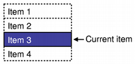 |
Выделение единственного элемента: Если пользователю нужно выбрать единственный элемент виджета, то режим по умолчанию - SingleSelection - наиболее подходящий. В этом режиме текущий элемент и выделенный элемент совпадают. |
|
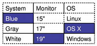 |
Выделение нескольких элементов: В этом режиме, пользователь может изменять состояние выделения любого элемента в виджете без изменения существующего выделения, подобно тому как независимо друг от друга можно переключать флажки (checkboxes). |
|
|
Расширенное выделение: Виджетам, которым часто требуется выбирать множество смежных элементов, например, электронные таблицы, требуется режим ExtendedSelection. В этом режиме непрерывные диапазоны элементов могут быть выделены с помощью мыши или клавиатуры. Сложные выделения, включающие множество несмежных друг-другу элементов, могут быть сделаны с помощью клавиш-модификаторов. Если пользователь выделяет элемент без использования клавиш-модификаторов, существующее выделение очищается. |
Выбранные в виджете элементы можно прочитать с помощью функции selectedItems(), возвращающей список соответствующих элементов, по которому можно перемещаться. Например, с помощью следующего кода мы можем найти сумму всех числовых значений выделенных элементов:
QList<QTableWidgetItem *> selected = tableWidget->selectedItems();
QTableWidgetItem *item;
int number = 0;
double total = 0;
foreach (item, selected) {
bool ok;
double value = item->text().toDouble(&ok);
if (ok && !item->text().isEmpty()) {
total += value;
number++;
}
}
Заметьте, что в режиме выделения единственного элемента, текущий элемент будет находиться в выделении. В режимах выделения нескольких элементов и расширенного выделения текущий элемент может не находиться в выделении, это зависит от способа, которым пользователь осуществляет выделение.
Поиск
Часто бывает полезно иметь возможность найти элементы внутри представления или для разработчика, или в качестве возможности, предоставляемой пользователю. Все три вспомогательных класса представления элементов предоставляют такую возможность с помощью функции findItems().
Элементы ищутся по тексту, который они содержат, в соответствии с критериями, заданными набором значений Qt::MatchFlags. С помощью функции findItems() можно получить список соответствующих элементов:
QTreeWidgetItem *item;
QList<QTreeWidgetItem *> found = treeWidget->findItems(
itemText, Qt::MatchWildcard);
foreach (item, found) {
treeWidget->setItemSelected(item, true);
// Показать для каждого элемента item->text(0).
}
Вышеприведенный код выделяет элементы виджета-дерева, если их текст содержит заданную строку поиска. Этот пример можно использовать также в виджетах-списках и виджетах-таблицах.
Использование перетаскивания (Drag and Drop) с представлениями элементов
Архитектура модель/представление полностью поддерживает инфраструктуру перетаскивания (drag and drop) Qt. Элементы списков, таблиц и деревьев можно перетаскивать внутри представлений, а их данные могут быть импортированы и экспортированы в виде закодированной в MIME информации.
Стандартные представления автоматически поддерживают внутреннюю операцию перетаскивания, когда элементы перемещаются внутри области отображения для изменения порядка их отображения. По умолчанию операция перетаскивания для этих представлений не разрешена, так как они созданы для простого, наиболее общего применения. Для того, чтобы элементы могли перетаскиваться, должны быть включены некоторые свойства представления, а самим элементам должно быть позволено перетаскиваться.
К модели, которая позволяет только экспортировать данные из представления, предъявляются более скромные требования, чем к модели, которая позволяет перетаскивать информацию в себя и требующей полной доступности операций перетаскивания.
Смотрите также Создание собственных моделей для более подробной информации о поддержке перетаскивания в новых моделях.
Использование вспомогательных представлений
Каждый тип элементов, используемых в QListWidget, QTableWidget и QTreeWidget, настроен для использования разных наборов флагов по умолчанию. Например, каждый объект QListWidgetItem или QTreeWidgetItem изначально доступен, переключаем, выбираем и может использоваться как источник для операции перетаскивания; каждый объект QTableWidgetItem также может быть редактируемым и использоваться как приемник операции перетаскивания.
Несмотря на то, что все стандартные элементы имеют один или оба установленных флага поддержки перетаскивания, вам, как правило, требуется установить различные свойства самого представления для того, чтобы воспользоваться возможностями встроенной поддержки операций перетаскивания:
Например, с помощью следующих строк кода можно включить использование операции перетаскивания в виджете-списке:
QListWidget *listWidget = new QListWidget(this);
listWidget->setSelectionMode(QAbstractItemView::SingleSelection);
listWidget->setDragEnabled(true);
listWidget->viewport()->setAcceptDrops(true);
listWidget->setDropIndicatorShown(true);
В результате виджет-список позволит элементам быть скопированным в пределах области отображения и даже быть перемещенными в виджеты, содержащие данные такого же типа. В обоих случаях, элементы будут скорее скопированы, чем перемещены.
Чтобы разрешить пользователю свободно перемещать элементы внутри представления нужно установить dragDropMode виджета-списка:
listWidget->setDragDropMode(QAbstractItemView::InternalMove);
Использование классов модель/представление
Настройка представления для использования операции перетаскивания происходит тем же образом, что и настройка традиционных представлений. Например, QListView может быть настроен точно также, как и QListWidget:
QListView *listView = new QListView(this);
listView->setSelectionMode(QAbstractItemView::ExtendedSelection);
listView->setDragEnabled(true);
listView->setAcceptDrops(true);
listView->setDropIndicatorShown(true);
Так как доступ к отображаемым представлением данным управляется моделью, используемая модель также должна предоставлять поддержку операций перетаскивания. Действия, поддерживаемые моделью, можно задать переопределив функцию QAbstractItemModel::supportedDropActions(). Например, с помощью следующего кода можно сделать доступными операции копирования и перемещения:
Qt::DropActions DragDropListModel::supportedDropActions() const
{
return Qt::CopyAction | Qt::MoveAction;
}
Модели можно передать любую комбинацию значений Qt::DropActions, но их поддержку моделью необходимо прописать. Например, для использования Qt::MoveAction должным образом моделью списка, модель должна иметь реализацию QAbstractItemModel::removeRows() или непосредственно, или унаследовав ее от базового класса.
Разрешение применения перетаскивания к элементам
Указать представлению, какие элементы можно перетаскивать, а на какие можно отпустить, модели могут с помощью переопределения функции QAbstractItemModel::flags(), предоставляющей соответствующие флаги.
Например, модель, предоставляющая простой список, основанный на QAbstractListModel, может позволить использование операции перетаскивания для каждого элемента, гарантируя, что возвращаемые флаги содержат значения Qt::ItemIsDragEnabled и Qt::Qt::ItemIsDropEnabled:
Qt::ItemFlags DragDropListModel::flags(const QModelIndex &index) const
{
Qt::ItemFlags defaultFlags = QStringListModel::flags(index);
if (index.isValid())
return Qt::ItemIsDragEnabled | Qt::ItemIsDropEnabled | defaultFlags;
else
return Qt::ItemIsDropEnabled | defaultFlags;
}
Обратите внимание на то, что отпускание позволяется только на верхнем уровне модели, а перетаскивание позволяется только для действительных элементов.
Так как модель унаследована от QStringListModel, то в вышеприведенном коде мы получили набор флагов по умолчанию вызвав ее реализацию функции flags().
Кодирование экспортируемых данных
При экспортировании элементов данных из модели в операцию перетаскивания, они кодируются в формат, соответствующий одному или нескольким типам MIME. Модели декларируют типы MIME, которые они могут применять по отношению к элементам, с помощью переопределения функции QAbstractItemModel::mimeTypes(), возвращающей список стандартных типов MIME.
Например, модель, которая предоставляет лишь простой текст, должна иметь следующую реализацию данной функции:
QStringList DragDropListModel::mimeTypes() const
{
QStringList types;
types << "application/vnd.text.list";
return types;
}
Также модель должна иметь код, конвертирующий данные в соответствующий формат. Это достигается с помощью переопределенной функции QMimeData, такой же, как и в любой другой операции перетаскивания.
Следующий код показывает, как каждый элемент данных, соответствующий списку индексов, может быть закодирован в виде простого текста и помещен в объект QMimeData.
QMimeData *DragDropListModel::mimeData(const QModelIndexList &indexes) const
{
QMimeData *mimeData = new QMimeData();
QByteArray encodedData;
QDataStream stream(&encodedData, QIODevice::WriteOnly);
foreach (const QModelIndex &index, indexes) {
if (index.isValid()) {
QString text = data(index, Qt::DisplayRole).toString();
stream << text;
}
}
mimeData->setData("application/vnd.text.list", encodedData);
return mimeData;
}
Так как функции передается список модельных индексов, этот подход достаточно универсален для использования в иерархических и неиерархических моделях.
Обратите внимание на то, что пользовательские типы данных должны объявляться как мета-объекты и для них должны быть реализованы потоковые операторы (stream operators). За подробностями обращайтесь к описанию класса QMetaObject.
Вставка отпускаемых данных в модель
Способ обработки моделью отпускания данных зависит от типа модели (список, таблица или дерево) и способа представления содержимого пользователю. Вообще, принимаемый для обработки отпускаемых данных подход должен зависеть от основного способа хранения данных.
Модели различных типов имеют обыкновение по разному обрабатывать отпускаемые данные. Модели списков и таблиц предоставляют плоскую структуру хранения элементов данных. В результате они могут при отпускании данных на существующем элементе представления вставлять строки (и столбцы) или переписать содержимое элементов модели, используя некоторые из предоставленных данных. Модели деревьев часто могут добавлять дочерние элементы, содержащие новую информацию, к основным разделам данных, и поэтому их поведение может быть более очевидно пользователю.
Отпускаемые данные обрабатываются моделью с помощью переопределенной QAbstractItemModel::dropMimeData(). Например, модель, работающая с простым списком строк, может по-разному обрабатывать отпускание данных на существующий элемент и на верхний уровень (т.е. на несуществующий элемент).
Модель сначала должна удостовериться, что операция должна быть выполнена, передаваемые данные имеют формат, который может использоваться, и что их назначение уместно для данной модели:
bool DragDropListModel::dropMimeData(const QMimeData *data,
Qt::DropAction action, int row, int column, const QModelIndex &parent)
{
if (action == Qt::IgnoreAction)
return true;
if (!data->hasFormat("application/vnd.text.list"))
return false;
if (column > 0)
return false;
Простая модель одностолбцового списка строк может сообщить об отказе в принятии данных, если перемещаемые данные не являются простым текстом или если переданный при перетаскивании номер столбца недействителен.
Вставляемые в модель данные, в зависимости от того, отпускаются ли они над действительным или над недействительным элементом, обрабатываются по-разному. В этом простом примере мы хотим разрешить отпускание между существующими элементами, до первого элемента списка и после последнего.
Когда происходит отпускание модельный индекс, соответствующий родительскому элементу, будет либо действительным, указывая что отпускание произошло на элемент, либо будет недопустимым, указывая что отпускание произошло где-то в представлении, что соответствует верхнему уровню модели.
int beginRow;
if (row != -1)
beginRow = row;
Сначала мы изучим переданный номер строки чтобы увидеть, можем ли мы использовать ее для вставки элементов в модель невзирая на то, является ли допустимым родительский индекс или нет.
else if (parent.isValid())
beginRow = parent.row();
Если родительский модельный индекс допустимый, то отпускание произойдет на элемент. В этой простой модели списка мы узнаем номер строки элемента и используем это значение для вставки отпускаемых элементов на верхний уровень модели.
else
beginRow = rowCount(QModelIndex());
Когда отпускание происходит где-нибудь в представлении и номер строки является недействительным, то элементы вставляются на верхний уровень модели.
В иерархических моделях, при отпускании над элементом, новые элементы лучше вставлять в модель в качестве дочерних по отношению к элементу, над которым происходит отпускание. В показанном здесь простом примере модель имеет один уровень, поэтому такой подход здесь неуместен.
Декодирование импортируемых данных
Каждая из реализаций dropMimeData() должна декодировать данные и вставлять их в основную структуру данных модели.
В простой модели списка строк декодированные элементы могут быть направлены в QStringList:
QByteArray encodedData = data->data("application/vnd.text.list");
QDataStream stream(&encodedData, QIODevice::ReadOnly);
QStringList newItems;
int rows = 0;
while (!stream.atEnd()) {
QString text;
stream >> text;
newItems << text;
++rows;
}
Строки могут быть вставлены в основную структуру данных. Чтобы быть последовательными, мы можем сделать это через интерфейс модели:
insertRows(beginRow, rows, QModelIndex());
foreach (const QString &text, newItems) {
QModelIndex idx = index(beginRow, 0, QModelIndex());
setData(idx, text);
beginRow++;
}
return true;
}
Обратите внимание на то, что модель обычно должна предоставлять реализации функций QAbstractItemModel::insertRows() и QAbstractItemModel::setData().
Модели-посредники
В структуре модель/представление, элементы данных предоставляемые одной моделью могут быть разделены между несколькими представлениями, и каждое из этих представлений может отображать информацию совершенно уникальным способом. Пользовательские представления и делегаты - эффективный метод, чтобы предоставить совершенно другие представления одних и тех же данных. Однако в приложениях часто требуется представление по-разному обработанных одних и тех же данных. Например, в виде списков, элементы которых по разному отсортированы.
Казалось бы вполне естественным выполнять сортировку и фильтрацию элементов данных силами самих представлений, но такой подход не позволяет многим представлениям совместно использовать результаты таких потенциально дорогостоящих операций. Альтернативный подход состоит в том, чтобы заставить саму модель сортировать данные, но в итоге каждое представление будет использовать результаты самой последней операции сортировки.
Для решения этой проблемы в архитектуре модель/представление используются модели-посредники (proxy models), управляющие данными, передаваемыми между отдельными моделями и представлениями. Модели-посредники - это компоненты, ведущие себя по отношению к представлению подобно модели данных и осуществляющие доступ к модели данных от имени представления. Механизм сигналов и слотов, используемый в архитектуре модель/представление, гарантирует, что все представления будут обновлены независимо от того, сколько моделей-посредников расположено между ними и моделью-источником.
Использование моделей-посредников
Модели-посредники могут быть вставлены между существующей моделью и любым количеством представлений. Qt предоставляет стандартную модель-посредник QSortFilterProxyModel, которая может использоваться как сама по себе, так и служить основой для подклассов, реализующих собственные способы фильтрации и сортировки. Класс QSortFilterProxyModel может использоваться следующим образом:
QSortFilterProxyModel *filterModel = new QSortFilterProxyModel(parent);
filterModel->setSourceModel(stringListModel);
QListView *filteredView = new QListView;
filteredView->setModel(filterModel);
Так как модели-посредники являются наследниками QAbstractItemModel, они могут быть соединены с представлением любого вида и быть разделенными между представлениями. Также они могут использоваться для обработки информации, полученной от другой модели-посредника.
Класс QSortFilterProxyModel разработан для того, чтобы использоваться непосредственно в приложениях. Наследуя от этого класса можно создать более специализированную модель-посредник, реализующую требуемые операции сравнения.
Настройка моделей-посредников
Обработка данных моделью-посредником включает в себя отображение каждого элемента данных из его исходного расположения в источнике относительно его изначального расположения в соответствующее расположение в модели-посреднике. В некоторых моделях отдельные элементы могут не обрести соответствующего расположения в модели-посреднике; такие модели являются фильтрующими моделями-посредниками. Представления работают с элементами данных, используя модельные индексы, предоставляемые моделью-посредником, и не имеют никакого представления ни относительно расположения элементов в модели, ни о модели-источнике.
QSortFilterProxyModel позволяет отфильтровать данные перед предоставлением их представлению, а также позволяет предоставить представлениям содержимое модели-источника как предварительно отсортированные данные.
Пользовательские модели фильтрации
Класс QSortFilterProxyModel предоставляет довольно универсальную фильтрующую модель, которая может использоваться в самых разных ситуациях. Продвинутые пользователи, для реализации собственных механизмов фильтрации, могут создать подкласс QSortFilterProxyModel.
Подкласс QSortFilterProxyModel может переопределить две виртуальные функции, которые вызываются всякий раз, когда требуется или используется модельный индекс от модели-посредника:
Реализация этих функций в QSortFilterProxyModel по умолчанию всегда возвращает true для того, чтобы гарантировать, что все строки и столбцы будут переданы представлению; переопределение этих функций может возвращать false для фильтрации отдельных строк и столбцов.
Пользовательские модели сортировки
Для обеспечения отображения элементов модели-источника в модель-посредник, экземпляры QSortFilterProxyModel используют встроенную в Qt функцию qStableSort(), тем самым позволяя представлению получить отсортированную иерархию элементов без изменения структуры модели-источника. Для предоставления собственного метода сортировки, переопределите функцию lessThan(), в которой пропишите свои правила сравнения.
Создание собственных моделей
Подклассы моделей необходимо обеспечить реализациями многих виртуальных функций, объявленных в базовом классе QAbstractItemModel. Некоторое количество этих функций, которые необходимо реализовать, зависят от типа модели - предоставляет ли представление с простым списком, таблицей или сложной иерархией элементов. Унаследованные от QAbstractListModel и QAbstractTableModel модели могут получить преимущество от стандартных реализаций функций, предоставляемых этими классами. Модели, которые предоставляют элементы данных в древовидных структурах, обязаны предоставить реализации для многих виртуальных функций QAbstractItemModel.
Функции, которые необходимо реализовать в подклассе модели, можно разделить на три группы:
Для получения дополнительной информации смотрите главу "Item View Classes" в книге "C++ GUI Programming with Qt 4".
Обработка элементов данных
Модели могут варьировать уровень доступа к предоставляемым ими данным: Они могут быть простыми компонентами только для чтения, другие модели могут обеспечивать операции изменения размера, а другие могут разрешить редактировать элементы.
Доступ только для чтения
Чтобы обеспечить доступ к предоставляемым моделью данным только для чтения, в подклассе модели должны быть реализованы следующие функции:
|
flags() |
Используется другими компонентами для получения информации о каждом элементе, предоставляемом моделью. Во многих моделях комбинация флагов будет включать в себя Qt::ItemIsEnabled и Qt::ItemIsSelectable. |
|
data() |
Используется для снабжения представлений и делегатов элементами данных. Как правило, модели нуждаются только в снабжении данными для Qt::DisplayRole и любых специфичных для приложения пользовательских ролей, но будет хорошей практикой предоставить данные для Qt::ToolTipRole, Qt::AccessibleTextRole и Qt::AccessibleDescriptionRole. Информацию о типах, связанных с каждой ролью, смотрите в документации перечисления Qt::ItemDataRole. |
|
headerData() |
Предоставляется представлениям с информацией для показа в их заголовках. Информация извлекается представлениями, которые могут отобразить информацию заголовков. |
|
rowCount() |
Предоставляет количество строк данных, доступных в модели. |
Эти четыре функции должны быть реализованы во всех видах моделей, включая модели списков (подклассы QAbstractListModel) и табличные модели (подклассы QAbstractTableModel).
Кроме того, следующие функции должны быть реализованы в прямых наследниках QAbstractTableModel и QAbstractItemModel:
|
columnCount() |
Предоставляет количество столбцов данных, доступных в модели. Модели списков не предоставляют эту функцию поскольку она уже реализована в QAbstractListModel. |
Редактируемые элементы
Редактируемые модели разрешают модифицировать элементы данных, а также могут предоставить функции, разрешающие вставку и удаление строк и столбцов. Чтобы разрешить редактирование, должны быть корректно реализованы следующие функции:
|
flags() |
Должна возвращать комбинацию флагов, соответствующую каждому элементу. В частности, возвращаемое этой функцией значение, в дополнение к используемым в модели только для чтения значениям, должно включать в себя Qt::ItemIsEditable. |
|
setData() |
Используется для модификации элемента данных, связанного с заданным модельным индексом. Чтобы иметь возможность принимать пользовательский ввод, предоставляемый элементами пользовательского интерфейса, эта функция должна обрабатывать данные, связанные с Qt::EditRole. Реализация может также принимать данные, связанные со многими различными видами ролей, задаваемыми Qt::ItemDataRole. После изменения элемента данных модели должны испустить сигнал dataChanged(), чтобы уведомить другие компоненты об изменении. |
|
setHeaderData() |
Используется для модификации информации в горизонтальном и вертикальном заголовке. После изменения элемента данных модели должны испустить сигнал headerDataChanged(), чтобы уведомить другие компоненты об изменении. |
Изменение размеров моделей
Все типы моделей могут поддерживать вставку и удаление строк. Табличные модели и иерархические модели могут также поддерживать вставку и удаление столбцов. Важно уведомить другие компоненты об изменениях в измерениях модели как до, так и после того как они произойдут. В результате, следующие функции могут быть реализованы для разрешения модели изменять размеры, но реализации должны гарантировать, что вызываются соответствующие функции для уведомления присоединенных представлений и делегатов:
|
insertRows() |
Используется для добавления новых строк и элементов данных во все виды моделей. Реализации должны содержать вызов beginInsertRows() перед вставкой новых строк в любые базовые структуры данных и вызов endInsertRows() незамедлительно после. |
|
removeRows() |
Используется для удаления строк и содержащихся в них элементов данных изо всех видов моделей. Реализации должны содержать вызов beginRemoveRows() перед удалением столбцов из базовых структур данных и вызов endRemoveRows() незамедлительно после. |
|
insertColumns() |
Используется для добавления новых столбцов и элементов данных в табличные и иерархические модели. Реализации должны содержать вызов beginInsertColumns() перед вставкой строк в любые базовые структуры данных и вызов endInsertColumns() незамедлительно после. |
|
removeColumns() |
Используется для удаления столбцов и содержащихся в них элементов данных из табличных и иерархических моделей. Реализации должны содержать вызов beginRemoveColumns() перед удалением столбцов из любых базовых структур данных и вызов endRemoveColumns() незамедлительно после. |
Как правило, эти функции возвращают true если операция была успешной. Однако могут быть случаи, когда операция достигла успеха только частично; например, если строк может быть вставлено меньше указанного количества. В таких случаях модель должна возвращать false, чтобы, обозначив фатальную ошибку, дать возможность каким-нибудь присоединенным компонентам обработать ситуацию.
Сигналы, испускаемые функциями, вызванными в реализациях API изменения размера, дают шанс присоединенным компонентам принять меры до того, как какие-либо данные станут недоступными. Инкапсуляция операций вставки и удаления с начальными и конечными функциями также дает возможность модели корректно управлять постоянными модельными индексами.
Как правило, начальные и конечные функции способны уведомлять другие компоненты об изменениях в базовой структуре модели. Для более сложных изменений в структуре модели, приводящие возможно к преобразованию или сортировке данных, необходимо испустить сигнал layoutChanged(), чтобы заставить все присоединенные представления обновиться.
Ленивое заполнение (Lazy Population) модели данных
Ленивое заполнение данных модели эффективно разрешает запросы информации о модели, отложенные до тех пор пока они фактически не понадобятся представлениям.
Некоторые модели нуждаются в получении данных из удаленных источников или должны выполнять ресурсоемкие операции, чтобы получить информацию о способе организации данных. Так как представления обычно требуют так много информации, сколько возможно по порядку для правильного отображения данных модели, для уменьшения излишних откликов (follow-up) на запрашиваемые данные может быть полезным ограничить количество возвращаемой к ним информации.
В иерархических моделях, где нахождение количества дочерних элементов заданного элемента является дорогостоящей операцией, полезно обеспечить, чтобы реализация QTreeView, рисования соответствующего оформления их родительского элемента.
Возвратит ли переопределенная функция QTreeView не нужно знать сколько имеется дочерних элементов, если родительский элемент не развернут для их показа.
Если известно, что многие элементы имеют дочерние элементы, переопределение hasChildren() для безусловного возврата true является иногда полезным методом. Это гарантирует, что каждый элемент может позднее проверить наличие дочерних элементов при выполнении начального заполнения данных модели так быстро, как это возможно. Единственное неудобство - это то, что элементы без дочерних элементов в некоторых представлениях могут отображаться неправильно пока пользователь пытается просмотреть несуществующие дочерние элементы.
Навигация и создание индекса модели
Иерархические модели должны предоставить функции, которые могут вызываться представлениями для навигации в древовидных структурах, которые они отображают, и получения модельных индексов элементов.
Родители и дети
Так как структура, открытая представлениям, определяется базовой структурой данных, создание собственных модельных индексов для каждого подкласса модели обеспечивается реализацией следующих функций:
|
index() |
Передавая модельный индекс родительского элемента, эта функция разрешает представлениям и делегатам обращаться к дочерним элементам этого элемента. Если не найдено допустимого дочернего элемента - соответствующего указанным строке, столбцу и родительскому модельному индексу, функция должна вернуть QModelIndex(), который является ошибочным модельным индексом. |
|
parent() |
Предоставляет модельный индекс, соответствующий родителю какого-либо дочернего элемента. Если указанный модельный индекс соответствует элементу верхнего уровня модели, или если у элемента в модели нет правильного родителя, функция должна вернуть неправильный модельный индекс, созданный с помощью пустого конструктора QModelIndex(). |
Обе приведенные выше функции используют фабрику функций createIndex() для генерации индексов, используемых другими компонентами. Для моделей является нормой снабжать эту функцию каким-нибудь уникальным идентификатором, чтобы гарантировать что модельный индекс может быть перепривязан к соответствующему элементу позднее.
Поддержка перетаскивания (Drag and Drop) и обработка MIME-типов
Классы модель/представление поддерживают операции перетаскивания (drag and drop), предоставляя поведение по умолчанию, что подходит многим приложениям. Тем не менее, возможно также внести изменения в способ кодирования элементов во время операций перетаскивания, копируются ли они по умолчанию или перемещаются, и как они вставляются в существующие модели.
Кроме того, классы вспомогательных представлений реализуют специализированное поведение, что отвечает ожиданиям существующих разработчиков. Раздел Вспомогательные представления предоставит обзор этого поведения.
MIME данные
По умолчанию, встроенные модели и представления используют внутренний MIME-тип (application/x-qabstractitemmodeldatalist) для передачи информации о модельных индексах. Это задает данные для списка элементов, содержащего номера строк и столбцов для каждого элемента и информацию о ролях, поддерживаемых для каждого элемента.
Закодированные с использованием этого MIME-типа данные могут быть получены с помощью вызова QAbstractItemModel::mimeData() с QModelIndexList, содержащим элементы для преобразования в последовательную форму.
При реализации поддержки перетаскивания в пользовательской модели, можно экспортировать элементы данных в специализированных форматах переопределив следующую функцию:
|
mimeData() |
Эта функция может быть переопределена таким образом, чтобы возвращать данные в форматах, отличных от стандартного внутреннего MIME-типа application/x-qabstractitemmodeldatalist. Подклассы могут получить стандартный объект QMimeData из базового класса и добавить в него данные в дополнительных форматах. |
Для многих моделей полезно предоставить содержимое элементов в общем формате, представленном одним из MIME-типов, таких как text/plain или image/png. Обратите внимание на то, что изображения, цвета и документы HTML могут быть легко добавлены в объект QMimeData с помощью функций QMimeData::setImageData(), QMimeData::setColorData() и QMimeData::setHtml().
Получение отпускаемых данных
Когда операция перетаскивания выполняется в представлении, основная модель запрашивается для определения поддерживаемых ею типов операций и MIME-типов, которые она может принимать. Эта информация предоставляется функциями QAbstractItemModel, поддерживают для элементов операции копирования и стандартный внутренний MIME-тип.
Когда преобразованный в последовательную форму (serialized) элемент данных отпускается над представлением, данные вставляются в текущую модель, используя ее реализацию QAbstractItemModel::dropMimeData(). Стандартная реализация этой функции никогда не затирает какие-либо данные в модели; вместо этого она попытается вставить элементы данных либо на одном уровне с элементом, либо в качестве дочерних этого элемента.
Чтобы воспользоваться реализацией по умолчанию QAbstractItemModel для встроенного MIME-типа, новые модели должны обеспечить переопределение следующих функций:
|
insertRows() |
Эти функции разрешают модели автоматическую вставку новых данных используя существующую реализацию, предоставляемую QAbstractItemModel::dropMimeData(). |
|
insertColumns() | |
|
setData() |
Разрешает заполнять элементами новые строки и столбцы. |
|
setItemData() |
Эта функция предоставляет более эффективную поддержку заполнения новых элементов. |
Чтобы принять другие формы данных эти функции должны быть переопределены:
|
supportedDropActions() |
Используется чтобы возвратить сочетание действий отпускания (drop actions), указывающих типы операций перетаскивания, которые принимает модель. |
|
mimeTypes() |
Используется чтобы возвращать список MIME-типов, которые могут быть декодированы и обработаны моделью. Как правило, MIME-типы, которые поддерживаются для ввода в модель, являются теми же, которые после раскодирования данных могут использоваться внешними компонентами. |
|
dropMimeData() |
Выполняет действительное раскодирование данных, переданных операциями перетаскивания, определяет где в модели они были положены и вставляет новые строки и столбцы там, где необходимо. Как реализуется эта функция в подклассах - зависит от требований данных, доступных в каждой модели. |
Если реализация функции dropMimeData() изменяет измерения модели, вставляя или удаляя строки или столбцы, или же если элементы данных модифицировались, осторожность требует убедиться, что все соответствующие сигналы испущены. Полезно просто вызвать другие переопределенные функции в подклассе, такие как setData(), insertRows() и insertColumns(), чтобы убедиться, что модель ведет себя соответственно.
Для того, чтобы убедиться что операции перетаскивания работают правильно, важно переопределить следующие функции, которые удаляют данные из модели:
За дополнительной информацией о перетаскивании с представлениями элементов обратитесь к Использование перетаскивания (Drag and Drop) с представлениями элементов.
Вспомогательные представления
Вспомогательные представления (QListWidget, QTableWidget и QTreeWidget) замещают стандартную функциональность перетаскивания чтобы обеспечить меньшую гибкость, но более естественное поведение, подходящее многим приложениям. Например, так как наиболее распространено отпускание данных в ячейки QTableWidget с заменой имеющегося содержимого переданными данными, базовая модель будет устанавливать данные в элементы-приемник охотнее, чем вставлять в модель новые строки и строки. Для получения дополнительной информации о перетаскивании во вспомогательных представлениях смотрите Использование перетаскивания (Drag and Drop) с представлениями элементов.
Оптимизация производительности для больших объемов данных
Функция QAbstractItemModel. Мы переопределили canFetchMore() чтобы указать, если для извлечения имеется больше данных, и fetchMore() для заполнения модели по требованию.
Другой пример будет динамически заполнять древовидные модели, в нем мы переопределяем fetchMore() когда ветвь дерева в древовидной модели является раскрытой.
Если ваша переопределенная fetchMore() добавляет строки к модели, вам нужно вызывать beginInsertRows() и endInsertRows(). Кроме того, и canFetchMore() и fetchMore() должны быть переопределены поскольку их реализации по умолчанию возвращают false и ничего не делают.
Классы модель/представление
Эти классы используются при разработке паттернов модель/представление, где основные данные (в модели) хранятся отдельно от данных представленных и управляемых пользователем (в представлении).
|
QAbstractItemDelegate |
Используется для отображения и редактирования элементов данных модели |
|
QAbstractItemModel |
Абстрактный интерфейс для классов моделей элементов |
|
QAbstractItemView |
Базовая функциональность для классов представлений элементов |
|
QAbstractListModel |
Абстрактная модель, подкласс которой можно создать для реализации одномерной модели списка |
|
QAbstractProxyModel |
Базовый класс для моделей-посредников элементов, которые могут сортировать, фильтровать и выполнять другие действия над данными |
|
QAbstractTableModel |
Абстрактная модель, подкласс которой можно создать для реализации собственной табличной модели |
|
QColumnView |
Реализация идеи модель/представление в виде постолбцового представления |
|
QDataWidgetMapper |
Отображение области данных модели на виджеты |
|
QFileSystemModel |
Модель данных для локальной файловой системы |
|
QHeaderView |
Заголовок строки и столбца для представлений элементов |
|
QItemDelegate |
Средство отображения и редактирования элементов данных модели |
|
QItemEditorCreator |
Делает возможным создание элемента редактора без наследования QItemEditorCreatorBase |
|
QItemEditorCreatorBase |
Абстрактный базовый класс, для которого, при реализации нового редактора элемента, должен быть создан подкласс |
|
QItemEditorFactory |
Виджеты для отображения данных в представлении и делегатах |
|
QItemSelection |
Управляет информацией о выбранных в модели элементах |
|
QItemSelectionModel |
Отслеживает элементы, выбранные в представлении |
|
QItemSelectionRange |
Управляет информацией о диапазоне выбранных элементов в модели |
|
QListView |
Представление списка или пиктограмм в модели |
|
QListWidget |
Основанный на элементах виджет-список |
|
QListWidgetItem |
Элемент, используемый совместно с классом представления элементов QListWidget |
|
QModelIndex |
Используется для нахождения информации в модели данных |
|
QPersistentModelIndex |
Используется для нахождения информации в модели данных |
|
QSortFilterProxyModel |
Поддержка сортировки и фильтрации данных, передаваемых между другой моделью и представлением |
|
QStandardItem |
Элемент, использующийся в классе QStandardItemModel |
|
QStandardItemEditorCreator |
Возможность регистрации виджетов без использования наследования QItemEditorCreatorBase |
|
QStandardItemModel |
Общая модель для хранения пользовательских данных |
|
QStringListModel |
Модель, предоставляющая представлению строки |
|
QStyledItemDelegate |
Средство отображения и редактирования элементов данных модели |
|
QTableView |
Реализация по умолчанию модели/представления таблицы |
|
QTableWidget |
Основанное на элементах представление таблицы в модели по умолчанию |
|
QTableWidgetItem |
Элемент, использующийся в классе QTableWidget |
|
QTableWidgetSelectionRange |
Способ взаимодействия с выбором в модели без использования модельных индексов и модели выбора. |
|
QTreeView |
Реализация модели/представления по умолчанию для представления дерева |
|
QTreeWidget |
Представление дерева, использующее заданную модель дерева |
|
QTreeWidgetItem |
Элемент, используемый в классе QTreeWidget |
|
QTreeWidgetItemIterator |
Способ перебора всех элементов QTreeWidget |
Связанные примеры
Смотрите также
Пример "Item Views Puzzle".